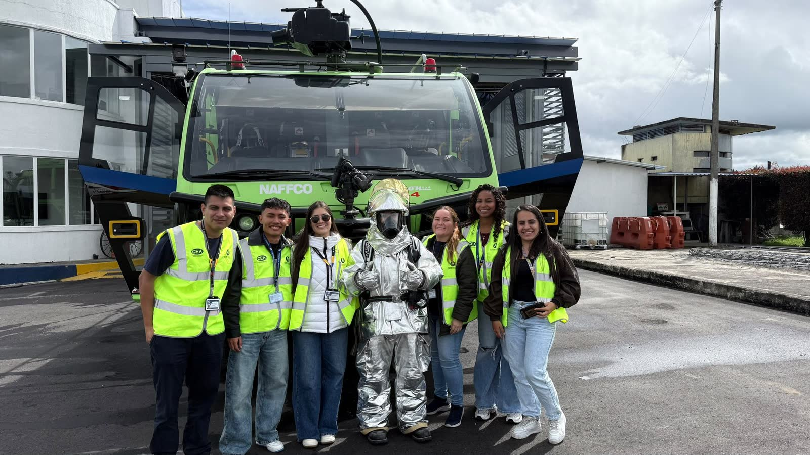

Quiénes somos
Un portal de estudio para el oficio AIS · COM · MET, gratis con tu registro.
Misión
Acompañar a quienes se forman como operadores de estación aeronáutica AIS · COM · MET en Colombia con un lugar gratuito para estudiar la teoría, practicar el trabajo real y medir su avance, con terminología y datos aeronáuticos correctos.
Visión
Ser la plataforma de referencia en español para prepararse en AIS · COM · MET: el lugar donde estudiantes y profesores del curso estudian, practican y siguen su progreso juntos.
Qué encuentras aquí
En el mismo orden en que se prepara un parcial: primero la teoría, luego la práctica, después tu nota y, si tu profesor lo usa, el trabajo de clase.
-
Estudia
Seis módulos teóricos: Meteorología, ATS, Plan de Vuelo, Fraseología, Navegación y NOTAM. Cada página trae chequeos rápidos para comprobar lo que acabas de leer.
Ver módulos -
Practica
Nueve quizzes con calificación inmediata y siete simuladores del puesto de trabajo. METAR, plan de vuelo OACI, NALA, terminal AFTN/AMHS, fraseología ATC por voz, memoria y el AIP de Colombia.
Zona de Quizzes -
Mide
Tu panel guarda tu nota con el mejor intento de cada quiz. También tu racha de estudio, tus logros y los temas que conviene repasar.
Ir a mi panel -
En clase
Con el código de tu profesor te unes a su grupo y presentas sus exámenes, lecturas, planes de vuelo y mensajería AFTN. El profesor revisa los resultados y los descarga en Excel.
Mis actividades
Y para consultar en cualquier momento: designadores de aeródromos, glosario, aeronaves y METAR y TAF en vivo.
Nuestros principios
Terminología correcta
Usamos la terminología aeronáutica de la OACI y nos mantenemos cerca de la normativa RAC y del AIP de Colombia. Cuando algo depende de una norma, lo indicamos.
Practicar no castiga
Puedes repetir cualquier quiz las veces que quieras: tu nota cuenta siempre tu mejor intento.
Pensado para Colombia
Designadores SK, las FIR de Bogotá y Barranquilla y el AIP de Colombia, con los aeródromos del país como ejemplos.
Autoría y fuentes
Quién lo hace
SoyAeronáutico fue creado y desarrollado por Cristian Arcila, autor de su contenido educativo, de sus simuladores y de las herramientas de consulta que integran la plataforma.
El contenido original, el material didáctico, los simuladores y el diseño de este sitio son propiedad intelectual de Cristian Arcila © 2026. Todos los derechos reservados.
De dónde salen los datos
Los datos meteorológicos y las imágenes de satélite provienen de fuentes públicas oficiales (NOAA, CIRA/RAMMB) y se acreditan en cada herramienta.
Es un portal de estudio independiente: su contenido tiene fines educativos y no reemplaza la documentación oficial (AIP, OACI, RAC).
Empieza por tu briefing de hoy.
En la portada ves qué te falta: estudiar, practicar, tu nota y tu grupo.